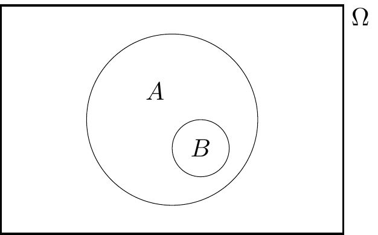
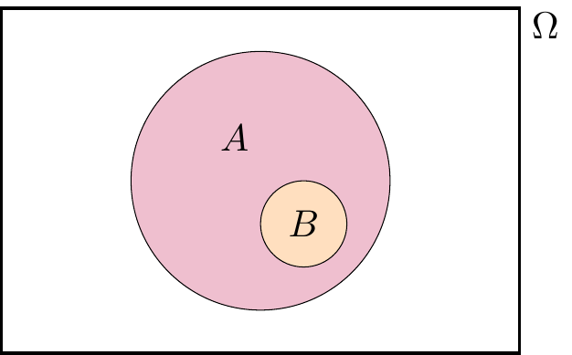
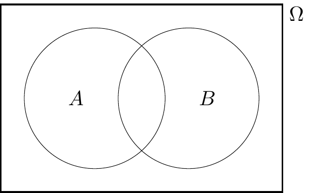
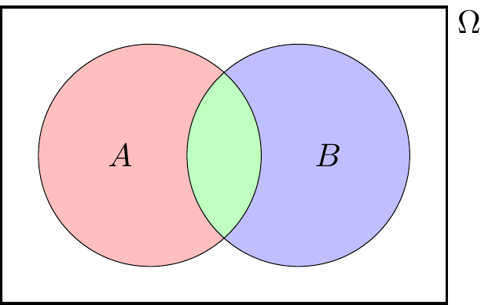

4 Probability
4.1 Probability axioms
Recall that, in this mathematics course, the probability of an event will be a real number that satisfies certain properties, which we call axioms.
Let \(\Omega\) be a sample space. A probability measure on \(\Omega\) is a function \(\mathbb P\) that assigns to each event \(A \subset \Omega\) a real number \(\mathbb P(A)\), called the probability of \(A\), and that satisfies the following three axioms:
- \(\mathbb P(A) \geq 0\) for all events \(A \subset \Omega\);
- \(\mathbb P(\Omega) = 1\);
- if \(A_1, A_2, \dots\) is a finite or infinite sequence of disjoint events, then [ P(A_1 A_2 ) = P(A_1) + P(A_2) + . ]
The sample space \(\Omega\) together with the probability measure \(\mathbb P\) are called a probability space.
Axiom 1 says that all probabilities are non-negative numbers. Axiom 2 says the probability that something happens is 1. Axiom 3 says that for disjoint events the probability that one of them happens is the sum of the individual probabilities. (Those who like their mathematical statements very precise should note that an infinite sequence in Axiom 3 must be “countable”; that is, indexed by the natural numbers \(1, 2, 3. \dots\).)
These axioms of probability (and our later results that follow from them) were first written down by the Russian mathematician Andrey Nikolaevich Kolmogorov in 1933. This marked the point from when probability theory could now be considered a proper branch of mathematics – just as legitimate as geometry or number theory – and not just a past-time that can be useful to help gamblers calculate their odds. I always find it surprising that the axioms of probability are less than 90 years old!
There are other properties that it seems natural that a probability measure should have aside from the axioms – for example, that \(\mathbb P(A) \leq 1\) for all events \(A\). But we will show shortly that other properties can be proven just by starting from the three axioms.
But first, let’s see some examples.
Suppose we wish to model tossing an biased coin the is heads with probability \(p\), where \(0 \leq p \leq 1\).
Our probability space is \(\Omega = \{\text{H}, \text{T}\}\). The probability measure is given by \[\begin{align*} \mathbb P(\varnothing) &= 0 & \mathbb P(\{\text{H}\}) &= p \\ \mathbb P(\{\text{T}\}) &= 1 - p & \mathbb P(\{\text{H},\text{T}\}) &= 1 . \end{align*}\]
Let’s check that the axioms hold:
- Since \(0 \leq p \leq 1\), all the probabilities are greater than or equal to 0.
- It is indeed the case that \(\mathbb P(\Omega) = \mathbb P(\{\text{H},\text{T}\}) = 1\).
- The only nontrivial disjoint union to check is \(\{\text{H}\} \cup \{\text{T}\} = \{\text{H},\text{T}\}\), where we see that [ P({}) + P({}) = p + (1 - p) = 1 = P({,}) , ] as required.
Suppose we wish to model rolling a dice.
Our sample space is \(\{1,2,3,4,5,6\}\). The probability measure is given by [ P(A) = , ] where \(|A|\) is the number of sample outcomes in \(A\).
So, for example, the probability of rolling an even number is [ P({2,4,6}) = = . ]
The dice rolling is a particular case of the “classical probability” of equally likely outcomes. We’ll look at this more in the next lecture, and prove that the classical probability measure does indeed satisfy the axioms
4.2 Properties of probability
The axioms of Definition @ref(def:axioms) only gave us some of the properties that we would like a probability measure to have. Our task now (in this subsection and the next) is to carefully prove how these other properties follow from just those axioms. In particular, we’re not allowed to make claims that merely “seem likely to be true” or “are common sense” – we can only use the three axioms together with strict logical deductions and nothing else.
Let \(\Omega\) be a sample space with a probability measure \(\mathbb P\). Then we have the following:
- \(\mathbb P(\varnothing) = 0\).
- \(\mathbb P(A^\comp) = 1 - \mathbb P(A)\) for all events \(A \subset \Omega\).
- For events \(A\) and \(B\) with \(B \subset A\), we have \(\mathbb P(B) \leq \mathbb P(A)\).
- \(0 \leq \mathbb P(A) \leq 1\) for all events \(A \subset \Omega\).
Importantly, the second result here tells us how to deal with complements or “not” events: the probability of \(A\) not happening is 1 minus the probability it does happen. This is often very useful.
Proof. The key with most of these “prove from the axioms” problems is to think of a way to write the relevant events as part of a disjoint union, then use Axiom 3. Statements 1 and 2 are exercises for you on Problem Sheet 2. We’ll start with the third statement.
Here, since \(B\) is a subset of \(A\), meaning that \(B\) is entirely inside \(A\).
It would be useful to write \(A\) as a disjoint union of \(\color{orange}B\) and “the bit of \(A\) that isn’t in \(B\)”. That is, we have the disjoint union [ A = B () .]

Applying Axiom 3 to this disjoint union gives [ P(A) = P(B) + P(A B^) . ]
We’re happy to see the term on the left-hand side and the first term on the right-hand side. But what about the awkward \(\mathbb P(A \cap B^\comp)\)? Well, by Axiom 1, we know that the probability of any event is greater than or equal to 0, so in particular. \(\mathbb P(A \cap B^\comp) \geq 0\). Hence [ P(A) P(B) + 0 = P(B) , ] and we are done with the third statement.
For the fourth statement, we have \(\mathbb P(A) \geq 0\) directly from Axiom 1, so only need to show that \(\mathbb P(A) \leq 1\). We can do this using the third statement of this theorem. For any event \(A\) we have \(A \subset \Omega\), so the third statement tells us that \(\mathbb P(A) \leq \mathbb P(\Omega)\). But Axiom 2 tells us that \(\mathbb P(\Omega) = 1\), so \(\mathbb P(A) \leq 1\) and we are done.
4.3 Addition rules for unions
If we have two or more events, we’d like to work out the probability of their union; that is, the probability that at least one of them occurs.
We already have an addition rule for disjoint unions.
Let \(A, B \subset \Omega\) be two disjoint events. Then [ P(A B) = P(A) + P(B) . ]
Proof. In Axiom 3, take the finite sequence \(A_1 = A\), \(A_2 = B\).
But what about if \(A\) and \(B\) are not disjoint? Then we have the following.
Let \(A, B \subset \Omega\) be two events. Then [ P(A B) = P(A) + P(B) - P(A B) . ]
You may have seen this result before. You’ve perhaps justified it by saying something like this: “We can add the two probabilities together, except now we’ve double-counted the overlap, so we have to take the probability of that away.” Maybe you drew a Venn diagram. That’s OK as a way to remember the result – but this is a proper university mathematics course, so we have to carefully prove it starting from just the axioms and nothing else.
(The following proof has been updated to match how I taught it in Wednesday’s lecture.)
Proof. The problem here is that \(A\) and \(B\) are not (in general) disjoint, so we can’t apply Axiom 3.

Instead, let’s split this up into the three disjoint bits: “\(A\) but not \(B\)” \(\color{red}{A \cap B^\comp}\), “\(B\) but not \(A\)” \(\color{blue}{B \cap A^\comp}\), and “both” \(\color{green}{A \cap B}\).

Now we can write \(A\), \(B\) and \(A \cup B\) in terms of these disjoint bits. \[\begin{align} A &= (\color{red}{A \cap B^\mathsf{c}}) \cup (\color{green}{A \cap B}) \\ B &= (\color{blue}{B \cap A^\mathsf{c}}) \cup (\color{green}{A \cap B}) \\ A \cup B &= (\color{red}{A \cap B^\mathsf{c}}) \cup (\color{blue}{B \cap A^\mathsf{c}}) \cup (\color{green}{A \cap B}), \end{align}\] with all the unions on the right-hand side being disjoint. Applying Axiom 3 to them all gives \[\begin{align} \mathbb P(A) &= \mathbb P(A \cap B^\mathsf{c}) + \mathbb P(A \cap B) (\#eq:un1) \\ \mathbb P(B) &= \mathbb P(B \cap A^\mathsf{c}) + \mathbb P(A \cap B) (\#eq:un2) \\ \mathbb P(A \cup B) &= \mathbb P(A \cap B^\mathsf{c}) + \mathbb P(B \cap A^\mathsf{c}) + \mathbb P(A \cap B) . (\#eq:un3) \end{align}\] Here, @ref(eq:un3) is looking good, but we need to get rid of the awkward \(\mathbb P(A \cap B^\mathsf{c})\) and \(\mathbb P(B \cap A^\mathsf{c})\) terms. We can do that be rearranging @ref(eq:un1) and @ref(eq:un2) to get \[\begin{align} \mathbb P(A \cap B^\mathsf{c}) &= \mathbb P(A) - \mathbb P(A \cap B) \\ \mathbb P(B \cap A^\mathsf{c}) &= \mathbb P(B) - \mathbb P(A \cap B) . \end{align}\] Substituting these into @ref(eq:un3) gives \[\begin{align} \mathbb P(A \cup B) &= \mathbb P(A) - \mathbb P(A \cap B) + \mathbb P(B) - \mathbb P(A \cap B) + \mathbb P(A \cap B) \\ &= \mathbb P(A)+ \mathbb P(B) - \mathbb P(A \cap B) , \end{align}\] as required.
Consider picking a card from a deck at random, with \(\mathbb P(A) = |A|/52\). What’s the probability the card is a spade or an ace?
It is possible to just to work this out directly. But let’s use our addition law for unions.
We have \(\mathbb P(\text{spade}) = \frac{13}{52}\) and \(\mathbb P(\text{ace}) = \frac{4}{52}\). So we have [ P() = + - P() . ] But \(\mathbb P(\text{spade and ace})\) is the probability of picking the ace of spades, which is \(\frac{1}{52}\). Therefore [ P() = + - = = . ]
Summary
- The axioms of probability are (1) \(\mathbb P(A) \geq 0\); (2) \(\mathbb P(\Omega) = 1\); and (3) that for disjoint events \(A_1, A_2, \dots\), we have \(\mathbb P(A_1 \cup A_2 \cup \cdots) = \mathbb P(A_1) + \mathbb P(A_2) + \cdots\).
- Other properties can be proven from these axioms, like the complement rule \(\mathbb P(A^\comp) = 1 - \mathbb P(A)\), and the addition rule for unions \(\mathbb P(A \cup B) = \mathbb P(A) + \mathbb P(B) - \mathbb P(A \cap B)\).